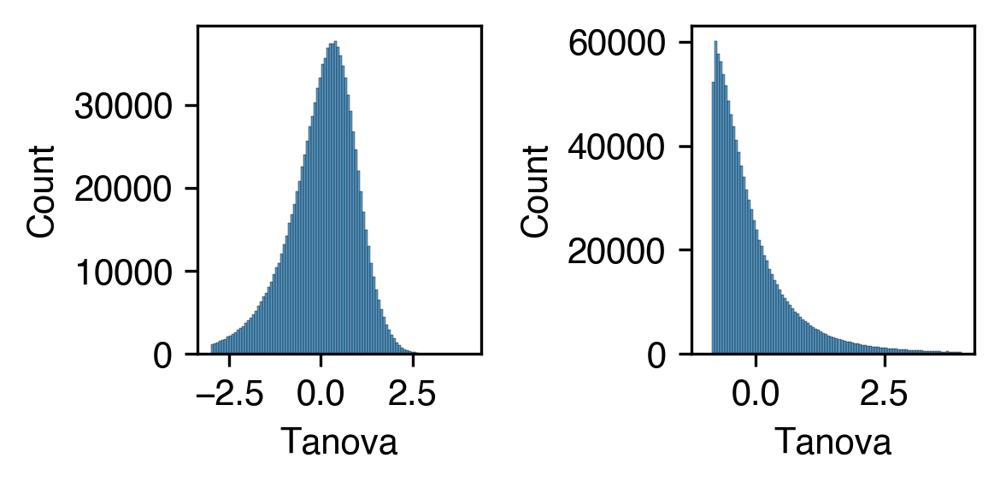
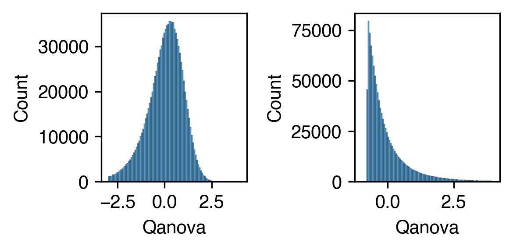
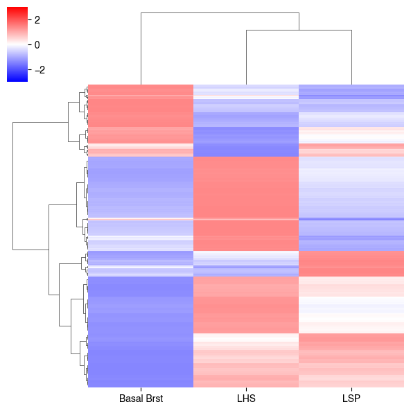
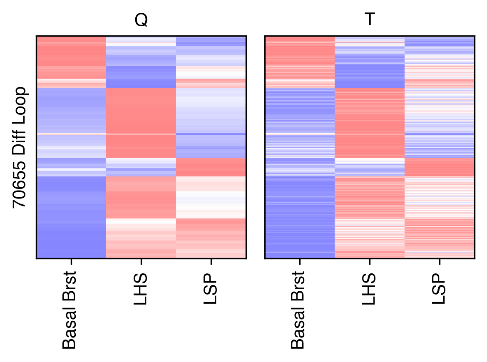

8. Diffloop subtype#
Part of the Fig. 4 chapter — see it for the panel-by-panel map. The first code cell sets ENTEX_ROOT and activates the no-overwrite guard (see the Reproduction guide). Outputs shown are the author’s original run.
📥 Required input files#
This notebook reads the following files (paths resolve from ENTEX_ROOT/REF_ROOT; the setup cell sets them). See the chapter’s inputs.md for RAW-vs-derived tags.
'/'· otherf'{ENTEX_ROOT}/analysis/diff_loop/all/merged_loop.hdf'· loop callsf'{indir}subtype_meta.tsv'· metadataf'{REF_ROOT}/blacklist/hg38_bismark_loop_blacklist.bed'· loop callsf'{loopdir}/{ct}/{ct}.{matrix}.cool'· contacts (cool)f'{loopdir}{ct}/{ct}.{matrix}.cool'· contacts (cool)f'{loopdir}/{ct}/{ct}.{matrix}2.cool'· contacts (cool)f'{loopdir}/{ct}/{ct}.loop.bedpe'· loop callsf'{outdir}subtype_{matrix}pv.cool'· contacts (cool)f'{outdir}merged_loop.hdf'· loop callsf'{loopdir}{ct}/{ct}.{m}.cool'· contacts (cool)f'{outdir}loop_Q.hdf'· loop callsf'{outdir}loop_T.hdf'· loop calls
# === Reproduction setup — edit ENTEX_ROOT / REF_ROOT for your machine ===
import os, sys
ENTEX_ROOT = os.environ.get('ENTEX_ROOT', '/large_storage/zhoulab/zhoujt/project/ENTEx')
REF_ROOT = os.environ.get('REF_ROOT', '/large_storage/zhoulab/ref')
BOOK_ROOT = os.environ.get('BOOK_ROOT', f'{ENTEX_ROOT}/analysis/HumanCellEpigenomeAtlas')
sys.path.insert(0, BOOK_ROOT)
os.chdir(f'{ENTEX_ROOT}/analysis') # original working directory
import repro_guard # no-overwrite guard (default: skip existing)
[repro_guard] active — READ-ONLY (all writes skipped; inline figures still render)
import os
import cooler
import pathlib
import numpy as np
import pandas as pd
from glob import glob
from scipy.sparse import load_npz, save_npz, vstack, csr_matrix, triu
from scipy.stats import f, zscore, ranksums, pearsonr, norm
from schicluster.cool.utilities import get_chrom_offsets
from multiprocessing import Pool
from concurrent.futures import ProcessPoolExecutor, as_completed
import seaborn as sns
import matplotlib as mpl
import matplotlib.pyplot as plt
mpl.style.use('default')
mpl.rcParams['pdf.fonttype'] = 42
mpl.rcParams['ps.fonttype'] = 42
mpl.rcParams['font.family'] = 'sans-serif'
mpl.rcParams['font.sans-serif'] = 'Helvetica'
import warnings
warnings.filterwarnings("ignore")
from glob import glob
indir = f'{ENTEX_ROOT}/diffloop/majortype-subtype/'
loop_list = np.sort(glob(f'{indir}*_merged_loop.hdf'))
loop_all = {xx.split('/')[-1].split('_')[0]:pd.read_hdf(xx) for xx in loop_list}
loop_all['all'] = pd.read_hdf(f'{ENTEX_ROOT}/analysis/diff_loop/all/merged_loop.hdf')
thres1 = norm.isf(0.025)
thres2 = norm.isf(0.15)
print(thres1, thres2)
1.9599639845400545 1.0364333894937898
fdrthres = 0.05
unique_loop = []
total_loop = []
for ct in loop_all:
loopall = loop_all[ct]
loopall.columns = loopall.columns.str.replace('-','')
loopall = loopall.loc[(loopall['Qanova']>0) & (loopall['Tanova']>0)]
# print(ct, (loopall['Qanova']==0).sum(), (loopall['Tanova']==0).sum())
statfilter = (zscore(np.log10(loopall['Qanova']))>thres2) & (zscore(np.log10(loopall['Tanova']))>thres2)
fdrfilter = (loopall['Qfdr']<fdrthres) & (loopall['Efdr']<fdrthres) & (loopall['Tfdr']<fdrthres)
selloop = statfilter & fdrfilter
print(ct, statfilter.sum(), fdrfilter.sum(), selloop.sum())
unique_loop.append(loopall.loc[selloop].iloc[:, :6])
total_loop.append(loopall.iloc[:, :6])
c0 81843 306108 81843
c10 89701 46709 46709
c11 19413 11084 11084
c12 29907 21001 18974
c13 39495 8144 8144
c14 41644 33312 33312
c15 15699 278 278
c16 42830 18356 18356
c17 17017 4967 4967
c18 58300 88667 58059
c19 49864 9168 9168
c1 36880 89843 36878
c20 32711 18322 18322
c21 55879 57822 55321
c22 0 0 0
c23 32710 915 915
c24 16132 264 264
c25 0 0 0
c26 10086 3776 3776
c27 13243 2809 2809
c28 28021 104 104
c29 20536 10539 10539
c2 828 2074 815
c30 0 0 0
c31 0 0 0
c32 2954 13 13
c33 15062 0 0
c34 14021 119 119
c3 32901 131932 32901
c4 49321 106245 49308
c5 2126 3990 2123
c6 54536 88709 54523
c7 34665 129413 34661
c8 60935 55007 51606
c9 13640 29926 13633
all 288656 3103539 288656
unique_loop = pd.concat(unique_loop, axis=0).drop_duplicates()
total_loop = pd.concat(total_loop, axis=0).drop_duplicates()
print(unique_loop.shape, total_loop.shape)
(621992, 6) (5387808, 6)
ANOVA of loop matrices across cell types#
group_name = 'EpiBrst'
indir = f'{ENTEX_ROOT}/'
loopdir = f'{indir}loop/subtype/'
outdir = f'{indir}analysis/diff_loop/{group_name}/'
# leg = {'exc': ['L23_IT', 'L4_IT', 'L5_IT', 'L6_IT', 'L6_IT_Car3', 'L56_NP', 'L6_CT', 'L6b', 'Amy'],
# 'inh': ['Lamp5', 'Lamp5_LHX6', 'Sncg', 'Vip', 'Pvalb', 'Pvalb_ChC', 'Sst', 'CHD7'],
# 'msn': ['MSN_D1', 'MSN_D2', 'Foxp2'],
# 'sub': ['SubCtx'],
# 'glia': ['ASC', 'ODC', 'OPC'],
# 'mgc': ['MGC'],
# 'smc': ['PC'],
# 'endo': ['EC'],
# 'fibro': ['VLMC'],
# }
# leg['neu'] = leg['exc'] + leg['inh'] + leg['msn'] + leg['sub']
# leg['all'] = leg['neu'] + leg['glia'] + leg['mgc'] + leg['smc'] + leg['endo'] + leg['fibro']
# L1_meta = pd.read_csv(f'{indir}L1color.tsv', sep='\t', header=0, index_col=0)
# L1_meta = L1_meta.drop(['c35', 'c36'], axis=0)
# L1_annot = L1_meta['L1_abbr'].to_dict()
# L1_color = L1_meta['color'].to_dict()
# ctgroup = []
# if '_' in group_name:
# for xx in group_name.split('_'):
# ctgroup.append(leg[xx])
# else:
# for xx in leg[group_name]:
# ctgroup.append([xx])
leg = pd.Index(['c18-b0', 'c18-b1', 'c25-b0'])
ctgroup = [[xx] for xx in leg]
print(len(ctgroup))
3
# indir = '/home/jzhou_salk_edu/sky_workdir/hba/loop_majortype/'
# outdir = '/home/jzhou_salk_edu/sky_workdir/hba/loop_majortype/'
res = 10000
# group = group_name
L2_meta = pd.read_csv(f'{indir}subtype_meta.tsv', sep='\t', header=0, index_col=0)
L2_annot = L2_meta['celltype_L2_both_abbr'].to_dict()
chrom_size_path = f'{REF_ROOT}/hg38/fasta/hg38.main.chrom.sizes'
chrom_sizes = cooler.read_chromsizes(chrom_size_path, all_names=True)
chrom_sizes = chrom_sizes.iloc[:22]
bins_df = cooler.binnify(chrom_sizes, res)
chrom_offset = get_chrom_offsets(bins_df)
bkl = pd.read_csv(f'{REF_ROOT}/blacklist/hg38_bismark_loop_blacklist.bed', sep='\t', header=None, index_col=None)
result = {'Q':{}, 'E':{}, 'T':{}}
for ct in leg:
for matrix in 'QET':
cool_e = cooler.Cooler(f'{loopdir}/{ct}/{ct}.{matrix}.cool')
n = cool_e.info['group_n_cells']
result[matrix][ct] = n
pd.DataFrame(result).sum()
Q 2236
E 2236
T 2236
dtype: int64
ncell = pd.Series(result['Q']).sum()
print(ncell)
2236
def compute_anova(c, matrix):
# c, matrix = args
ngene = int(chrom_sizes.loc[c] // res) + 1
bkl_tmp = bkl.loc[(bkl[0]==c), [1,2]].values // res
cov = np.zeros(ngene)
for xx,yy in bkl_tmp:
cov[xx-7:yy+7] = 1
tot, last = 0, 0
Esum, E2sum, Elast, E2last, ss_intra = [csr_matrix((ngene, ngene)) for i in range(5)]
for ctlist in ctgroup:
for ct in ctlist:
cool_e = cooler.Cooler(f'{loopdir}{ct}/{ct}.{matrix}.cool')
E = triu(cool_e.matrix(balance=False, sparse=True).fetch(c))
cool_e2 = cooler.Cooler(f'{loopdir}/{ct}/{ct}.{matrix}2.cool')
E2 = triu(cool_e2.matrix(balance=False, sparse=True).fetch(c))
n = cool_e.info['group_n_cells']
Esum += E * n
E2sum += E2 * n
tot += n
# print(c, ct)
Egroup = Esum - Elast
E2group = E2sum - E2last
Egroup.data = Egroup.data ** 2 / (tot - last)
ss_intra += (E2group - Egroup)
Elast = Esum.copy()
E2last = E2sum.copy()
last = tot
Esum.data = Esum.data ** 2 / tot
ss_total = E2sum - Esum
ss_intra.data = 1 / ss_intra.data
ss_total = ss_total.multiply(ss_intra)
# print(c, ss_total.data.min(), ss_intra.data.min())
ss_total.data = (ss_total.data - 1) * (tot - len(ctgroup)) / (len(ctgroup) - 1)
ss_total = ss_total.tocoo()
bklfilter = np.logical_and(cov[ss_total.row]==0, cov[ss_total.col]==0)
distfilter = np.logical_and((ss_total.col-ss_total.row)>5, (ss_total.col-ss_total.row)<500)
idxfilter = np.logical_and(bklfilter, distfilter)
# print(idxfilter.sum(), len(idxfilter))
ss_total = csr_matrix((ss_total.data[idxfilter], (ss_total.row[idxfilter], ss_total.col[idxfilter])), (ngene, ngene))
save_npz(f'{outdir}subtype_{matrix}pv_{c}.npz', ss_total)
return [c, matrix, tot]
# for ct in L1_meta.index:
# for matrix in 'QET':
# cool_e = cooler.Cooler(f'{loopdir}{ct}/{ct}.{matrix}.cool')
# n = cool_e.info['group_n_cells']
# print(ct, matrix, n)
cpu = 20
with ProcessPoolExecutor(cpu) as executor:
futures = []
for x in chrom_sizes.index:
for y in 'QET':
future = executor.submit(
compute_anova,
c=x,
matrix=y,
)
futures.append(future)
# result = []
for future in as_completed(futures):
# result.append(future.result())
# c1, c2 = result[-1][0], result[-1][1]
tmp = future.result()
print(f'{tmp[0]} {tmp[1]} finished')
chr7 Q finished
chr5 Q finished
chr6 Q finished
chr4 Q finished
chr5 E finished
chr3 Q finished
chr7 E finished
chr6 T finished
chr6 E finished
chr5 T finished
chr4 T finished
chr4 E finished
chr9 Q finished
chr8 Q finished
chr3 T finished
chr3 E finished
chr7 T finished
chr8 E finished
chr8 T finished
chr9 E finished
chr1 Q finished
chr2 Q finished
chr2 T finished
chr1 T finished
chr2 E finished
chr13 Q finished
chr14 Q finished
chr9 T finished
chr1 E finished
chr12 Q finished
chr11 T finished
chr10 Q finished
chr13 E finished
chr13 T finished
chr11 Q finished
chr16 Q finished
chr10 E finished
chr10 T finished
chr15 Q finished
chr16 E finished
chr11 E finished
chr17 Q finished
chr17 T finished
chr17 E finished
chr14 E finished
chr14 T finished
chr18 E finished
chr18 T finished
chr19 E finished
chr18 Q finished
chr12 E finished
chr16 T finished
chr19 Q finished
chr22 Q finished
chr12 T finished
chr19 T finished
chr21 Q finished
chr21 T finished
chr15 E finished
chr20 Q finished
chr20 T finished
chr15 T finished
chr20 E finished
chr22 E finished
chr21 E finished
chr22 T finished
def chrom_iterator(input_dir, chrom_order, chrom_offset):
for chrom in chrom_order:
output_path = f'{input_dir}_{chrom}.npz'
if not pathlib.Path(output_path).exists():
continue
chunk_size = 5000000
data = load_npz(output_path).tocoo()
df = pd.DataFrame({'bin1_id': data.row, 'bin2_id': data.col, 'count': data.data})
df = df[df['bin1_id'] <= df['bin2_id']]
for i, chunk_start in enumerate(range(0, df.shape[0], chunk_size)):
chunk = df.iloc[chunk_start:chunk_start + chunk_size]
chunk.iloc[:, :2] += chrom_offset[chrom]
yield chunk
for matrix in 'QET':
output_path = f'{outdir}subtype_{matrix}pv'
cooler.create_cooler(cool_uri=f'{output_path}.cool',
bins=bins_df,
pixels=chrom_iterator(input_dir=output_path,
chrom_order=chrom_sizes.index,
chrom_offset=chrom_offset
),
ordered=True,
dtypes={'count': np.float32})
os.system(f'rm {outdir}subtype_*pv_c*.npz')
256
loopall = [pd.read_csv(f'{loopdir}/{ct}/{ct}.loop.bedpe', sep='\t', index_col=None, header=None) for ct in leg]
loopall = pd.concat(loopall, axis=0)
loopall = loopall.drop([6], axis=1).drop_duplicates(subset=[0,1,4]).sort_values([0,1,4])
loopall = pd.concat([loopall[(loopall[0]==c).values] for c in chrom_sizes.index])
loopall.index = np.arange(loopall.shape[0])
loopall
| 0 | 1 | 2 | 3 | 4 | 5 | |
|---|---|---|---|---|---|---|
| 0 | chr1 | 900000 | 910000 | chr1 | 960000 | 970000 |
| 1 | chr1 | 900000 | 910000 | chr1 | 970000 | 980000 |
| 2 | chr1 | 910000 | 920000 | chr1 | 970000 | 980000 |
| 3 | chr1 | 960000 | 970000 | chr1 | 1270000 | 1280000 |
| 4 | chr1 | 960000 | 970000 | chr1 | 1280000 | 1290000 |
| ... | ... | ... | ... | ... | ... | ... |
| 1110030 | chr22 | 50530000 | 50540000 | chr22 | 50610000 | 50620000 |
| 1110031 | chr22 | 50530000 | 50540000 | chr22 | 50620000 | 50630000 |
| 1110032 | chr22 | 50540000 | 50550000 | chr22 | 50600000 | 50610000 |
| 1110033 | chr22 | 50540000 | 50550000 | chr22 | 50610000 | 50620000 |
| 1110034 | chr22 | 50550000 | 50560000 | chr22 | 50610000 | 50620000 |
1110035 rows × 6 columns
loopall.to_csv(f'{outdir}merged_loop.bedpe', sep='\t', index=False, header=False)
loopall.to_hdf(f'{outdir}merged_loop.hdf', key='data')
for c in chrom_sizes.index:
loopfilter = (loopall[0]==c)
looptmp = loopall.loc[loopfilter, [1,4]].values // res
for matrix in 'QET':
cool = cooler.Cooler(f'{outdir}subtype_{matrix}pv.cool')
pv = triu(cool.matrix(balance=False, sparse=True).fetch(c)).tocsr()
loopall.loc[loopfilter, f'{matrix}anova'] = pv[(looptmp[:,0], looptmp[:,1])].A1
print(c)
chr1
chr2
chr3
chr4
chr5
chr6
chr7
chr8
chr9
chr10
chr11
chr12
chr13
chr14
chr15
chr16
chr17
chr18
chr19
chr20
chr21
chr22
from scipy.stats import f
from statsmodels.sandbox.stats.multicomp import multipletests as FDR
def stats2fdr(data):
pv = [f.sf(x, nct-1, ncell-nct) for x in data.values]
fdr = FDR(pv, 0.01, "fdr_bh")[1]
return fdr
nct = len(leg)
print(ncell, nct)
2236 3
cpu = 3
with ProcessPoolExecutor(cpu) as executor:
futures = {}
for m in 'QET':
future = executor.submit(
stats2fdr,
loopall[f'{m}anova']
)
futures[future] = m
# result = []
for future in as_completed(futures):
m = futures[future]
loopall[f'{m}fdr'] = future.result()
print(f'{m} finished')
Q finished
E finished
T finished
loopall.to_hdf(f'{outdir}merged_loop.hdf', key='data')
Load Loop Q#
loopall = pd.read_hdf(f'{outdir}merged_loop.hdf', key='data')
loopall
| 0 | 1 | 2 | 3 | 4 | 5 | Qanova | Eanova | Tanova | Efdr | Tfdr | Qfdr | |
|---|---|---|---|---|---|---|---|---|---|---|---|---|
| 0 | chr1 | 900000 | 910000 | chr1 | 960000 | 970000 | 7.669787 | 11.825746 | 3.665761 | 1.640833e-05 | 0.075788 | 0.003234 |
| 1 | chr1 | 900000 | 910000 | chr1 | 970000 | 980000 | 8.686361 | 12.461282 | 2.613162 | 9.079493e-06 | 0.156988 | 0.001440 |
| 2 | chr1 | 910000 | 920000 | chr1 | 970000 | 980000 | 6.811968 | 10.170562 | 1.192515 | 7.667776e-05 | 0.422142 | 0.006350 |
| 3 | chr1 | 960000 | 970000 | chr1 | 1270000 | 1280000 | 4.661726 | 11.193139 | 1.069866 | 2.957975e-05 | 0.460368 | 0.033458 |
| 4 | chr1 | 960000 | 970000 | chr1 | 1280000 | 1290000 | 3.344096 | 9.765030 | 1.294619 | 1.118816e-04 | 0.392913 | 0.089914 |
| ... | ... | ... | ... | ... | ... | ... | ... | ... | ... | ... | ... | ... |
| 1110030 | chr22 | 50530000 | 50540000 | chr22 | 50610000 | 50620000 | 12.249915 | 18.597105 | 6.991621 | 2.991671e-08 | 0.007000 | 0.000080 |
| 1110031 | chr22 | 50530000 | 50540000 | chr22 | 50620000 | 50630000 | 9.747795 | 18.063080 | 6.300688 | 4.918935e-08 | 0.011614 | 0.000613 |
| 1110032 | chr22 | 50540000 | 50550000 | chr22 | 50600000 | 50610000 | 4.138350 | 9.628341 | 1.233643 | 1.270833e-04 | 0.410104 | 0.049712 |
| 1110033 | chr22 | 50540000 | 50550000 | chr22 | 50610000 | 50620000 | 5.581578 | 10.344213 | 1.510063 | 6.522399e-05 | 0.337719 | 0.016528 |
| 1110034 | chr22 | 50550000 | 50560000 | chr22 | 50610000 | 50620000 | 1.699034 | 7.478938 | 0.879355 | 9.413757e-04 | 0.527312 | 0.298691 |
1110035 rows × 12 columns
def load_Q(ct, m):
tmp = []
cool_file = cooler.Cooler(f'{loopdir}{ct}/{ct}.{m}.cool').matrix(balance=False, sparse=True)
for c in chrom_sizes.index:
mat = cool_file.fetch(c).tocsr()
tmp.append(mat[(loopall.loc[loopall[0]==c, 1].values // res, loopall.loc[loopall[0]==c, 4].values // res)].A1)
# print(ct, c)
return [ct, np.concatenate(tmp)]
cpu = 20
with ProcessPoolExecutor(cpu) as executor:
futures = []
for xx in leg:
future = executor.submit(
load_Q,
ct=xx,
m='Q'
)
futures.append(future)
loopq = []
for future in as_completed(futures):
tmp = future.result()
loopq.append(pd.DataFrame(tmp[1], columns=[tmp[0]]))
print(f'{tmp[0]} finished')
c25-b0 finished
c18-b1 finished
c18-b0 finished
loopq = pd.concat(loopq, axis=1)
loopq = loopq[leg]
loopq.to_hdf(f'{outdir}loop_Q.hdf', key='data')
cpu = 20
with ProcessPoolExecutor(cpu) as executor:
futures = []
for xx in leg:
future = executor.submit(
load_Q,
ct=xx,
m='T'
)
futures.append(future)
loopt = []
for future in as_completed(futures):
tmp = future.result()
loopt.append(pd.DataFrame(tmp[1], columns=[tmp[0]]))
print(f'{tmp[0]} finished')
c25-b0 finished
c18-b0 finished
c18-b1 finished
loopt = pd.concat(loopt, axis=1)
loopt = loopt[leg]
loopt.to_hdf(f'{outdir}loop_T.hdf', key='data')
print(loopall.shape, loopq.shape, loopt.shape)
(1110035, 12) (1110035, 3) (1110035, 3)
loopq = pd.read_hdf(f'{outdir}loop_Q.hdf', key='data')
loopt = pd.read_hdf(f'{outdir}loop_T.hdf', key='data')
sell = (loopall['Qanova']==0) | (loopall['Eanova']==0) | (loopall['Tanova']==0)
print(sell.sum())
0
# loopall = loopall.loc[~sell]
# loopq = loopq.loc[~sell]
# loopt = loopt.loc[~sell]
fig, axes = plt.subplots(1, 2, figsize=(4, 2), dpi=300)
ax = axes[0]
sns.histplot(zscore(np.log10(loopall['Tanova'])), bins=100, binrange=(-3,4), ax=ax)
ax = axes[1]
sns.histplot(zscore(loopall['Tanova']), bins=100, binrange=(-1,4), ax=ax)
plt.tight_layout()

fig, axes = plt.subplots(1, 2, figsize=(4, 2), dpi=300)
ax = axes[0]
sns.histplot(zscore(np.log10(loopall['Qanova'])), bins=100, binrange=(-3,4), ax=ax)
ax = axes[1]
sns.histplot(zscore(loopall['Qanova']), bins=100, binrange=(-1,4), ax=ax)
plt.tight_layout()

outdir
'/large_storage/zhoulab/zhoujt/project/ENTEx/analysis/diff_loop/EpiBrst/'
thres1 = norm.isf(0.025)
thres2 = norm.isf(0.15)
print(thres1, thres2)
1.9599639845400545 1.0364333894937898
# selb = ((zscore(loopall['Qanova'])>thres2) & (zscore(loopall['Tanova'])>thres2))
# print(selb.sum())
selb = ((zscore(np.log10(loopall['Qanova']))>thres2) & (zscore(np.log10(loopall['Tanova']))>thres2))
print(selb.sum())
70949
fdrthres = 0.01
statfilter = (zscore(np.log10(loopall['Qanova']))>thres2) & (zscore(np.log10(loopall['Tanova']))>thres2)
fdrfilter = (loopall['Qfdr']<fdrthres) & (loopall['Efdr']<fdrthres) & (loopall['Tfdr']<fdrthres)
selloop = statfilter & fdrfilter
print(statfilter.sum(), fdrfilter.sum(), selloop.sum())
70949 103048 70655
tmpq = loopq.loc[selloop].values
tmpq = zscore(tmpq, axis=1)
tmpt = loopt.loc[selloop].values
tmpt = zscore(tmpt, axis=1)
np.random.seed(0)
sel = np.random.choice(np.arange(len(tmpq)), 2000, False)
cg = sns.clustermap(tmpq[sel], cmap='bwr', vmin=-3, vmax=3, method='ward', # metric='cosine',
xticklabels=leg.map(L2_annot), yticklabels=[], figsize=(6,6))

rorder = cg.dendrogram_row.reordered_ind.copy()
corder = cg.dendrogram_col.reordered_ind.copy()
fig, axes = plt.subplots(1, 2, sharey='all', figsize=(4, 3), dpi=300)
ax = axes[0]
ax.imshow(tmpq[np.ix_(sel[rorder], corder)], cmap='bwr', aspect='auto', vmin=-3, vmax=3, interpolation='none')
ax.set_title('Q', fontsize=10)
# sns.despine(ax=ax, left=True, bottom=True)
ax.set_xticks(np.arange(len(leg)))
ax.set_xticklabels(leg[corder].map(L2_annot), rotation=90)
ax.set_yticks([])
ax.set_ylabel(f'{tmpq.shape[0]} Diff Loop')
ax = axes[1]
ax.imshow(tmpt[np.ix_(sel[rorder], corder)], cmap='bwr', aspect='auto', vmin=-3, vmax=3, interpolation='none')
ax.set_title('T', fontsize=10)
# sns.despine(ax=ax, left=True, bottom=True)
ax.set_xticks(np.arange(len(leg)))
ax.set_xticklabels(leg[corder].map(L2_annot), rotation=90)
plt.tight_layout()
